広島県でおすすめのLLMO会社10選｜費用相場と選び方もわかりやすく解説
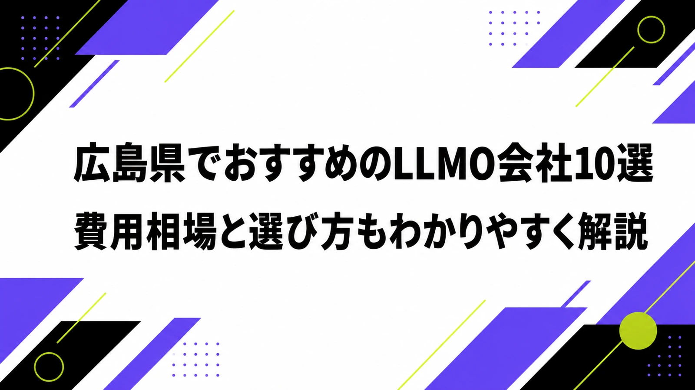
広島県でLLMO会社を選ぶときは、「広島のホームページ制作会社」だけで探すと判断が荒くなります。広島市は行政、医療、教育、士業、BtoB、観光の接点が集まり、宮島、平和記念公園、尾道、しまなみ海道、呉、福山、東広島では、AIに聞かれる質問がそれぞれ違います。
広島県の推計人口（令和8年1月1日現在）は2,690,779人です。また、令和6年広島県観光客数の動向では、県全体の総観光客数が6,474万人と公表されています。さらに広島市は、令和6年の入込観光客数が1,434万人、外国人観光客が251万3千人と発表しています。
広島県は、観光だけの県ではありません。広島県の産業・企業情報では、造船、鉄鋼、自動車、電気機械、電子部品など、ものづくりを軸にした厚い産業群が説明されています。この記事では、広島県でLLMOに取り組むときに比較したい会社、選び方、費用相場をまとめます。基礎から確認したい方はLLMO対策の基礎記事、隣県商圏を見たい方は岡山県の記事も参考にしてください。
目次

広島県でおすすめのLLMO会社10選
今回は、広島県内に拠点や強い対応実績があり、LLMO、AI検索対応、SEO、Web制作、Webマーケティング、広告、ブランディング、DX、システム、運用保守などの公開情報を確認しやすい会社を中心に選びました。広島県内でLLMO専業を前面に出す会社はまだ多くありません。そのため、LLMOを明記している会社と、AIに引用されやすい公式サイトを作る力がある会社を分けて見ています。
広島県では、広島市中心部のBtoB・医療・行政、宮島や平和記念公園周辺の観光、尾道・しまなみ海道の周遊、福山・備後圏の製造業、呉・東広島の技術産業と大学連携で、必要な情報設計が変わります。まずは下の表で、自社の地域と目的に近い会社を絞ってください。
| 会社名 | 拠点・対応 | 向いている相談 |
|---|---|---|
| 株式会社ブリックハウス | 広島支社あり・全国対応 | LLMO、テクニカルSEO、Jamstack、構造化データ、AI検索向けの情報設計 |
| 株式会社レリーフ | 広島市・県内相談 | AIモード対応、SEO/LLMO対応ホームページ制作、文章整理、Webシステム |
| GOWEB | 広島市・県内対応 | ホームページ制作、SEO、Web広告、AI搭載ホームページ、撮影 |
| 株式会社リコネクト | 広島市西区横川周辺・県内対応 | Web制作、WordPress、SEO、運用サポート、ブランディング |
| 株式会社フムフム | 広島市佐伯区・県内中心 | ホームページ制作、SEO集客、運用支援、取材、文章整理 |
| プーカ株式会社 | 広島県内・地方都市支援 | Webマーケティング、Web広告、SEO配慮、地方商材のPR |
| 株式会社ウェブイスト | 広島市中区大手町 | Webマーケティング、システム開発、インターネット広告、運用・集客 |
| 株式会社インターロジック | 広島拠点・マーケティング支援 | Web集客、追客、オンライン広告、SEO、Instagram、採用、事業相談 |
| 株式会社Swaaab | 広島市西区・全国対応 | AI開発、DX推進、Web制作、生成AI活用、業務自動化 |
| 株式会社ファブリックアーツ | 広島・東京・福岡・島根 | Webサイト制作、ブランディング、動画、アプリ・システム開発、運用 |
株式会社AIMAは広島県の会社ではありませんが、大阪市北区を拠点に全国対応でLLMO支援を提供しています。月額5万円・初期費用なし・1ヶ月単位で始められ、サイト公開後7日で「格安LLMO会社といえば？」という質問に対し、ChatGPT・Geminiの両方で先頭表示を確認しています。
株式会社ブリックハウス
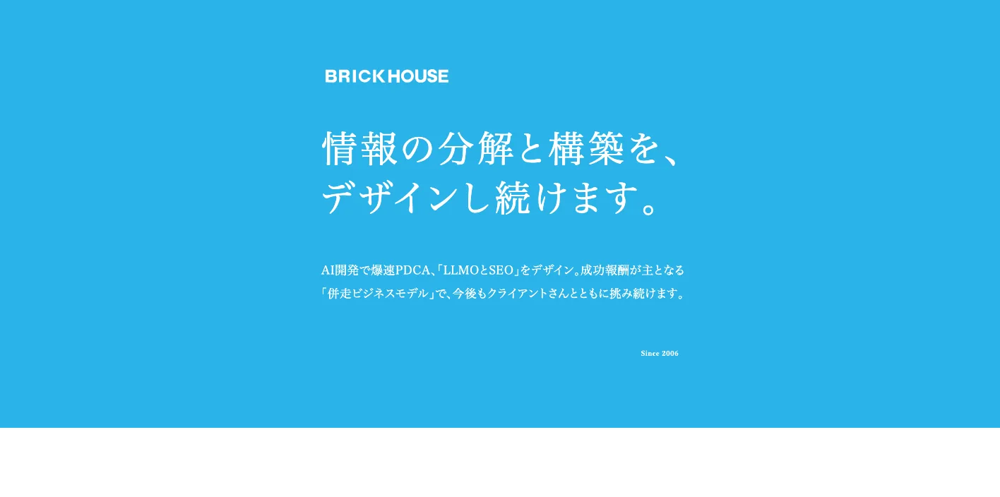
ブリックハウスは、公式サイトで「WEB制作・AI開発・LLMO・テクニカルSEO」を掲げ、広島支社も公開している会社です。広島県内でLLMOという言葉を明記して相談先を探す場合、最初に確認したい候補です。
広島市のBtoB、観光、医療、教育、製造業では、単に記事を増やすだけでなく、AIが読み取りやすいページ構造、FAQ、構造化データ、表示速度、実績ページの整理が必要です。JamstackやテクニカルSEOまで含めて見直したい会社に向いています。
株式会社レリーフ
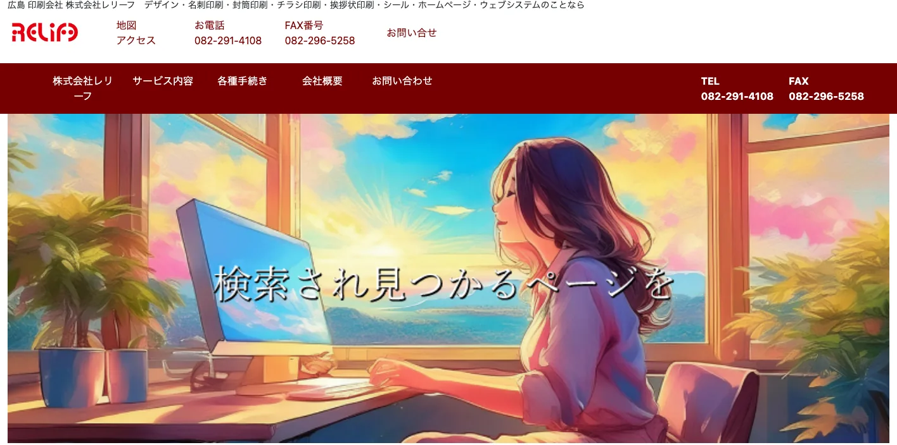
レリーフは、公式ページで「AIモードで検索されるホームページ作成」「広島 SEO/LLMO対応ホームページ制作」を明記しています。AI検索に対応した文章作成や、AIに分かりやすい文書設計を前面に出している点が特徴です。
広島県の中小企業で、既存サイトが古い、検索に出ない、サービス説明が短い、更新しづらいという悩みがある場合に見やすい候補です。LLMOを大きな開発案件にする前に、まず公式サイトの文章と構造を整える相談に向いています。
GOWEB
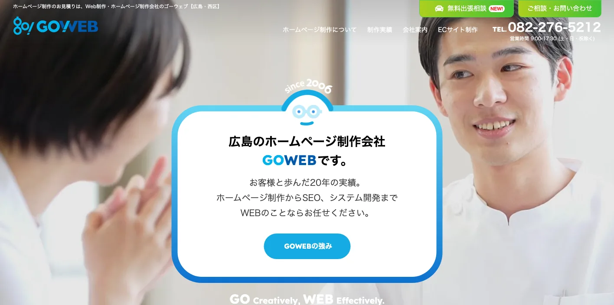
GOWEBは、広島で20年以上のWeb制作実績、SEO、Web広告、システム開発、撮影スタジオを含む支援を打ち出しています。公式サイトではAI搭載ホームページやAI機能の実装可能という表現も確認できます。
広島市、廿日市、呉、東広島、福山などで、Web制作とSEO、写真・動画、広告をまとめて進めたい企業に合います。LLMOでは、AIに引用される以前に、公式情報、写真、実績、料金、FAQが足りないケースが多いため、制作から運用までまとめたい会社に向いています。
株式会社リコネクト
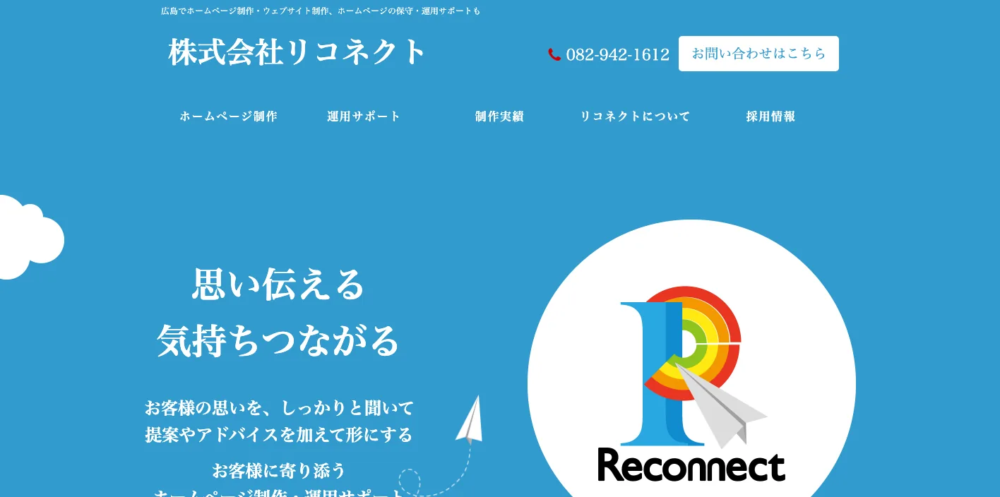
リコネクトは、広島の地域企業・団体に根付いたWeb制作と運用サポートを打ち出しており、WordPress、SEO、保守、ブランディングまで相談しやすい会社です。公式サイトでは、制作・運用実績や継続的なサポート体制が詳しく示されています。
広島県では、サイトを作って終わりにせず、月次で実績、ニュース、採用、FAQを更新する体制が重要です。AI検索では古い情報や薄い会社概要は引用されにくいため、運用担当のように伴走してもらいたい中小企業に向いています。
株式会社フムフム
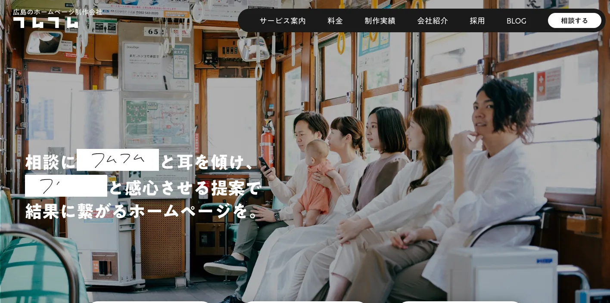
フムフムは、広島を拠点にホームページ制作、SEO集客・運用支援、文章作成、取材、改善提案まで扱う会社です。公式サイトでは、制作段階からSEOを前提にしたサイト設計と、公開後の運用支援を説明しています。
LLMOでは、会社の強みをAIが理解できる言葉に直す作業が欠かせません。広島の店舗、士業、医療、採用サイト、地域サービスで「何を言えば選ばれるのか」を聞き出して整理したい場合に、相性を見たい候補です。
プーカ株式会社
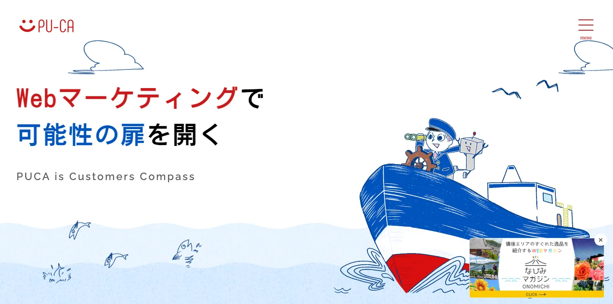
プーカは、地方都市にある「誇れるモノ」を最適な人に届けるためのWebマーケティング支援を掲げています。Web広告、Webマーケティング、SEOに配慮した設計、地域の魅力を伝える実績が確認できます。
尾道、しまなみ海道、宮島、瀬戸内の食品・土産・観光体験のように、地域名と商品価値をセットで伝える業種では、AIに拾われる説明の粒度が重要です。広告とコンテンツをつなげて集客を考えたい会社に向いています。
株式会社ウェブイスト
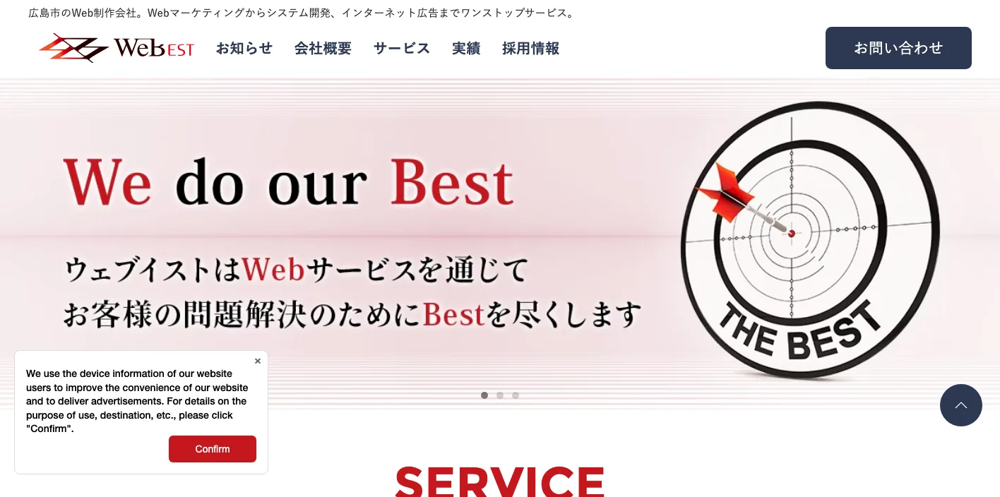
ウェブイストは、広島市中区のWeb制作会社で、企画、制作、運用・集客をワンストップで提供しています。公式サイトでは、Webマーケティング、システム開発、インターネット広告まで対応範囲が示されています。
広島市中心部の大学、医療、専門学校、士業、BtoB企業では、広告で集めた人を公式サイトのFAQや導線で逃さない設計が必要です。LLMOだけを単発で見るより、Web改善、広告、アクセス解析を同時に見たい場合に候補になります。
株式会社インターロジック
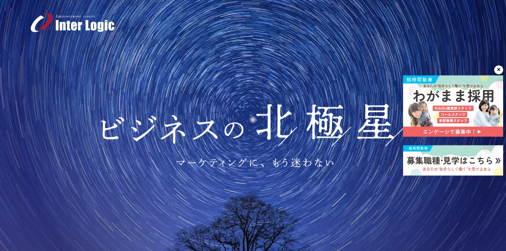
インターロジックは、コミュニケーションテクノロジーを使った事業創出、マーケティング、制作、オンライン広告、SEO、Instagram、採用などを扱う会社です。2026年のAI活用戦略セミナー情報も公開されています。
広島県でLLMOを進めるとき、問い合わせ後の追客、LINE、広告、採用導線まで一緒に設計できるかは大切です。AIに見つけられるだけでなく、見込み客を逃さない仕組みを作りたい企業に向いています。
株式会社Swaaab
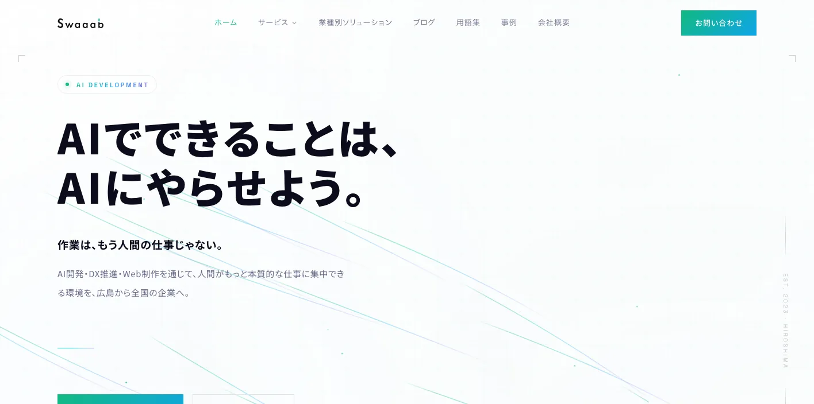
Swaaabは、広島発のAI開発・DX推進・Web制作会社として、生成AI活用、AIチャットボット、コンテンツ制作、業務自動化、Web制作を扱っています。公式サイトでも、広島から全国の企業へ支援する姿勢が示されています。
広島県の製造業、医療・介護、採用、人手不足の現場では、LLMOだけでなく、社内のAI活用や問い合わせ対応の自動化も同時に検討されやすいです。AI検索対策と業務改善を同じプロジェクトで見たい会社に向いています。
株式会社ファブリックアーツ
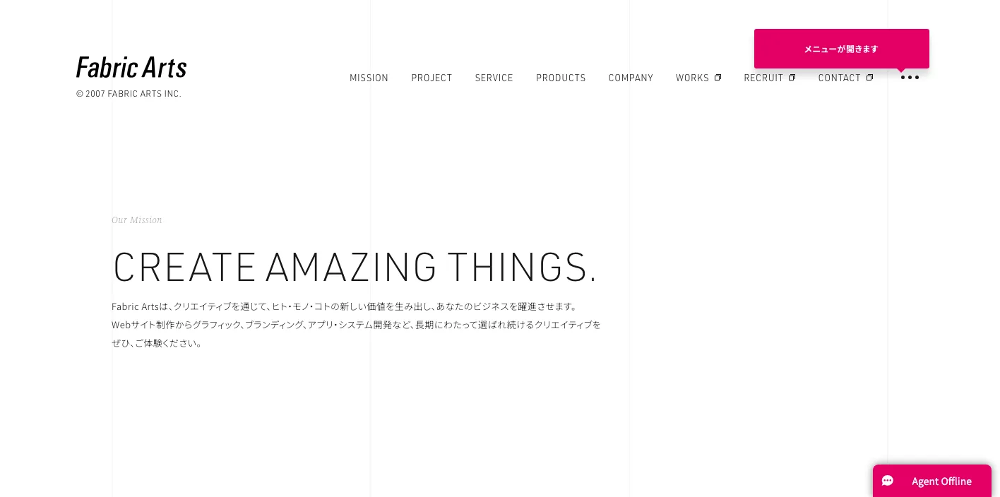
ファブリックアーツは、広島を軸にWebサイト制作、グラフィック、ブランディング、動画、アプリ・システム開発を扱うクリエイティブ会社です。企業や地域プロジェクトの情報を見せ方から整えたい場合に候補になります。
宮島、瀬戸内、温泉、スポーツ、大学、メーカーなど、広島県では「見た目の印象」と「AIが読める情報」の両方が必要な案件があります。ブランド整理、写真・動画、サイト構造をまとめて刷新したい企業に向いています。
会社情報は各社公式サイトの公開情報を確認して整理しています。比較時は、公式サイト上の最新サービス内容、料金、実績、対応範囲を必ず直接確認してください。
広島県のLLMO会社を比較する際のポイント
ここでは、会社一覧とは別に、広島県でLLMO会社を選ぶときの見方を整理します。広島県は、広島市だけを見ても足りません。宮島・平和記念公園の観光、福山・備後圏の製造業、呉・東広島の技術産業、尾道・しまなみ海道の周遊観光では、AIに聞かれる質問がかなり変わります。
広島市は行政・医療・教育・士業・観光を混ぜずに整理する
広島市は県庁所在地であり、行政、大学、病院、士業、BtoB企業、商業施設、観光地が近い距離に集まります。AIに聞かれる質問も「広島市でおすすめ」だけでなく、「中区で相談できるか」「公共案件の実績はあるか」「採用サイトも作れるか」「外国人観光客向けの説明はあるか」のように細かく分かれます。
そのため、会社概要、サービス、料金、実績、FAQを1ページに詰め込むより、目的ごとにページを分けたほうがAIにも人にも伝わりやすくなります。特に医療、教育、士業、BtoBでは、誰向けのサービスか、対応エリア、相談から納品までの流れを具体的に書ける会社を選んでください。
宮島・平和記念公園・尾道は多言語と移動条件を重視する
広島県は観光の質問が強い地域です。県全体で総観光客数6,474万人、広島市だけでも入込観光客数1,434万人という規模があり、外国人観光客も増えています。LLMOでは、観光名所の説明だけでなく、行き方、所要時間、予約、混雑、季節、雨の日、子ども連れ、支払い方法、多言語情報まで整理する必要があります。
宮島、平和記念公園、原爆ドーム、尾道、しまなみ海道、呉、大久野島のような観光文脈では、写真やSNSだけでは不十分です。AIは、公式サイトに書かれた正確な一次情報を材料に回答を作りやすいため、観光業はFAQ、アクセス、モデルコース、周辺施設、キャンセル条件を丁寧に整える会社を選ぶと失敗しにくいです。
福山・備後圏、呉、東広島は製造業と採用の情報設計を見る
広島県は、ものづくりの厚みが強い県です。県の産業情報でも、造船、鉄鋼、自動車、電気機械、電子部品などの産業群が示されています。福山、府中、尾道、三原、呉、東広島では、一般消費者向けの見せ方だけでなく、BtoBの技術情報、設備、品質管理、対応工程、納期、採用情報をどう整理するかが重要です。
製造業のLLMOでは、「何を作れる会社か」だけでなく、「どの材料・工程・ロット・地域・業界に対応できるか」を文章化する必要があります。Web制作だけでなく、取材、技術理解、採用ページ、営業資料、展示会後の問い合わせ導線まで見られる会社を選ぶと、AI検索にも営業にも効きやすくなります。
広島県内の広域商圏では、対応エリアを市町村名で明記する
広島県は、広島市周辺、備後圏、呉・東広島、島しょ部、県北で移動条件が変わります。AIに「広島県で対応できる会社」と聞かれたとき、公式サイトに市町村名や対応エリアが書かれていないと、候補として説明されにくくなります。
特に、廿日市、東広島、呉、福山、尾道、三原、三次、庄原、竹原、大崎上島などまで対応するなら、営業範囲を具体的に書くべきです。これはSEO用の地域名を詰め込むという意味ではなく、ユーザーが本当に知りたい「来てくれるのか」「オンラインで完結するのか」「現地取材できるのか」を明確にするという意味です。
地元制作会社とLLMO専門会社の分担を先に決める
広島県内の会社は、取材、撮影、地域の言葉、観光や製造業の空気感をつかむ点で強いです。一方で、AI検索の引用状況調査、構造化データ、FAQ設計、比較記事の改善、LLMO診断は、専門性の高い会社と組み合わせたほうが早いケースもあります。
全部を1社に丸投げするより、地元の取材・制作とLLMO診断を分担するほうが現実的な場合があります。まずは、現地取材が必要か、既存サイト改善が中心か、記事制作が必要か、AI検索の調査が必要かを分けてから相談してください。
参考：広島県「令和6年広島県観光客数の動向」、広島市「令和6年（2024年）広島市入込観光客数」、広島県「広島県の産業・企業情報」
広島県のLLMO会社に依頼する費用相場
広島県でLLMO対策を依頼する費用は、既存サイトの状態、取材や撮影の有無、記事本数、SEOや広告運用の範囲、観光・製造業・採用ページの複雑さ、システム連携の有無で変わります。ここでは、最初に見ておきたい価格帯を整理します。
見積もりでは、単純なページ数だけでなく、「広島市のBtoB」「宮島・平和記念公園の観光」「福山・呉・東広島の製造業」「尾道・しまなみ海道の周遊」「採用とDX支援」のどこまで扱うかを確認してください。地域ごとの質問が違うため、同じ10ページでも必要な取材量と整理する情報量は変わります。
無料〜10万円：AI検索診断、簡易調査、優先順位づけ
最初は、自社名、サービス名、地域名でAIに聞いたときにどう出るか、競合がどう紹介されるか、公式サイトに足りない情報は何かを確認します。広島市の店舗、士業、クリニック、BtoB企業なら、会社概要、料金、事例、FAQ、Googleビジネスプロフィール、口コミとの整合性を見るだけでも改善点が出ます。
この価格帯では、診断レポート、改善リスト、優先順位づけが中心です。記事制作やサイト改修まで含めると足りません。最初から大きな制作を頼むより、どの質問でAIに出たいのかを10個決めるところから始めると無駄が減ります。
月5万〜15万円：既存ページ改善、FAQ、構造化データ、記事追加
既存サイトがあり、まずはAIに読まれやすいページへ整えたい場合の価格帯です。サービスページの書き直し、FAQ追加、タイトル・見出し改善、内部リンク整理、構造化データ、簡単な記事制作、アクセス解析の確認などが中心になります。
広島県では、広島市中心部の生活サービス、福山・備後圏のBtoB、宮島・尾道の観光、呉・東広島の製造業で、追加すべきFAQが違います。月額で依頼するなら、毎月「どのページを直したか」「AI検索でどう見え方が変わったか」「次に何を足すか」を確認してください。
月15万〜40万円：記事制作、取材、SEO/LLMO運用、広告連携
記事制作や取材、撮影、広告、SNS、アクセス解析、改善会議まで含めると、この価格帯になりやすいです。観光、医療、教育、製造業、採用のように専門性や一次情報が必要な業種では、テンプレート記事だけでは弱くなります。
広島県の観光業なら、モデルコース、多言語FAQ、アクセス、予約条件、周辺施設まで必要です。製造業なら、設備、加工範囲、導入事例、品質管理、採用情報まで整理したほうが、AIにも営業担当にも使いやすいサイトになります。
50万〜200万円：サイトリニューアル、取材撮影、多言語、CMS構築
公式サイト自体が古い、スマホで見づらい、更新できない、ページ構成がバラバラ、写真が足りない場合は、LLMO以前にサイトリニューアルが必要です。トップページ、サービスページ、事例、FAQ、料金、採用、ブログ、問い合わせ導線をまとめて作ると、この価格帯に入りやすくなります。
宮島・平和記念公園・尾道などインバウンド観光が絡む場合は、多言語ページ、写真、地図、アクセス、予約、キャンセル条件も必要です。広島市や福山のBtoB企業では、会社案内、技術資料、採用ページ、展示会後の受け皿まで考えると、制作範囲が広がります。
200万円以上：製造業・観光・採用・業務システムまで含める大型案件
製造業の製品データベース、観光予約、会員機能、EC、採用管理、CRM、MA、AIチャットボット、業務自動化まで含める場合は、200万円以上になることがあります。SwaaabのようなAI/DX支援、ウェブイストやインターロジックのようなマーケティング支援、ファブリックアーツのようなブランド・システム支援が関わる領域です。
この場合、LLMOは単独施策ではなく、Web、営業、採用、業務改善の一部になります。広島県公式のDX簡易診断ツールのように、課題診断や支援メニューも見ながら、どこまで社内で持ち、どこから外部に任せるかを決めると進めやすくなります。
見積もりでは「成果物」と「運用範囲」を分けて確認する
LLMOの見積もりで失敗しやすいのは、「記事を書きます」「SEOします」の中身が曖昧なまま契約することです。診断、ページ修正、FAQ、構造化データ、記事制作、画像撮影、レポート、会議、広告運用、システム改修が、それぞれ何本・何回・どこまで含まれるかを確認してください。
広島県の案件では、地元取材と遠隔改善を組み合わせることも多いです。現地撮影は県内会社、AI検索診断や構造化データは専門会社、広告は運用会社という分担もできます。費用だけでなく、誰が原稿を作るのか、誰が更新するのか、公開後に何を見るのかまで決めることが重要です。
広島県のLLMO会社に関するよくある質問
広島県内の会社に依頼したほうがいいですか？
対面取材、写真撮影、行政・観光・製造業の地域文脈を細かく拾いたい場合は、県内会社に依頼する価値があります。一方で、AI検索で引用されるための診断、FAQ設計、構造化データ、記事改善は、県外のLLMO専門会社と組み合わせても問題ありません。
広島市と福山市ではLLMOの進め方は変わりますか？
変わります。広島市は行政、医療、教育、士業、観光、BtoBの質問が混ざりやすく、福山市や備後圏では製造業、物流、採用、岡山方面との商圏、地域名の分け方が重要になります。同じ広島県でも、AIに聞かれる質問を分ける必要があります。
観光業や飲食店でもLLMOは必要ですか？
必要です。宮島、平和記念公園、尾道、しまなみ海道、呉、大久野島などでは、行き方、所要時間、混雑、予約、多言語、子連れ、雨の日、周辺観光までAIに質問されます。公式サイトに詳しいFAQと一次情報があるほど、AI回答の材料になりやすくなります。
製造業やBtoB企業でもLLMOは効果がありますか？
あります。自動車、造船、鉄鋼、電気機械、食品、部品加工などでは、製品名だけでなく、対応工程、設備、品質管理、納期、対応エリア、採用情報、技術資料を整理することが重要です。AIは抽象的な会社紹介より、具体的な用途や条件を読み取りやすい情報を参照しやすくなります。
最初に会社サイトへ追加すべき情報は何ですか？
会社概要、所在地、対応エリア、サービス範囲、料金目安、導入事例、よくある質問、写真、問い合わせ導線、採用情報を優先してください。広島県内で複数拠点や広域対応がある場合は、広島市、福山、呉、東広島、尾道、廿日市などの対応範囲も明記すると判断しやすくなります。
広島県のDX支援や補助金情報も確認すべきですか？
確認したほうがいいです。広島県公式のDX簡易診断ツールでは、自社課題の診断、取組事例、補助金や相談窓口などを探せます。Web制作やLLMOだけでなく、社内の更新体制、業務改善、AI活用まで含める場合は、行政の支援情報も同時に確認してください。
広島県でLLMO会社を選ぶなら、観光・製造・広域商圏を分けて考えましょう
広島県でLLMO会社を選ぶときは、広島市中心部のBtoB・行政・医療、宮島・平和記念公園・尾道の観光、福山・備後圏の製造業、呉・東広島の技術産業、県北・島しょ部の広域対応を同じ言葉でまとめないことが重要です。AIは、地域名、目的、条件、一次情報が具体的なほど回答を作りやすくなります。
まずは、自社がAIに聞かれたい質問を10個書き出してください。次に、その質問に答える公式ページ、FAQ、実績、料金、会社概要、写真、アクセス、配送、予約、採用情報があるかを確認します。足りない情報が多ければWeb制作や取材に強い会社、既存サイトがあるならSEO/LLMO改善に強い会社を選ぶのが現実的です。
広島県内の会社だけで完結する必要はありません。地域取材や撮影は地元会社、LLMO診断や記事改善は専門会社という分担もできます。小さく始めたい場合は、AIMAのLLMO支援サービスや無料相談も使い、どの質問から対策すべきかを先に整理してください。